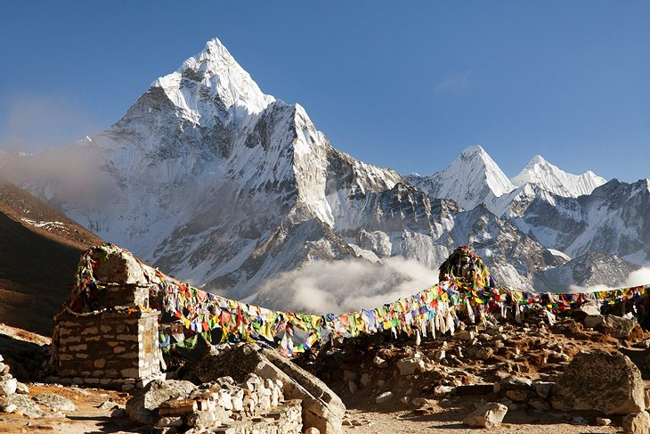

Nepal


Nepal is the ultimate destination for mountain lovers. The Nepali Himalayas is the roof of the World, home to Mount Everest — the highest peak on earth. Travelers who venture to this country soon discover a lot more sights and experiences that are worth the long journey from home. Listed as a UNESCO World Heritage Site, Kathmandu Valley is home to medieval squares and sacred monuments for Hindus & Buddhists. In Pokhara, you can go paragliding or simply enjoy the majestic views of the snow-capped Himalayan mountains from one of the many easily accessible viewpoints.
How to go
Kathmandu International Airport is the primary gateway to Nepal. The airport’s busiest destinations include major gateways in India (Delhi), Middle East (Doha, Abu Dhabi, Dubai) & Southeast Asia (Bangkok, Kuala Lumpur). From the Philippines, book a connecting flight via Bangkok, Kuala Lumpur or Singapore since there are no direct flights from Manila to Kathmandu. Excluding time spent on layovers, travel time from the Philippines to Nepal via Bangkok should take around 7 hours minimum.